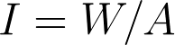
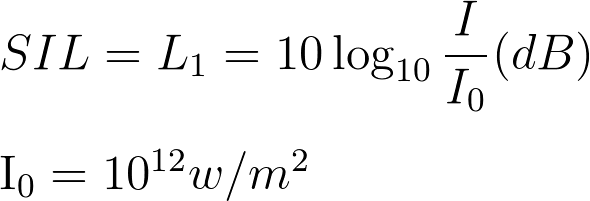
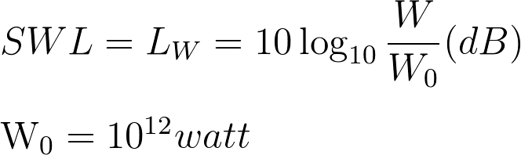
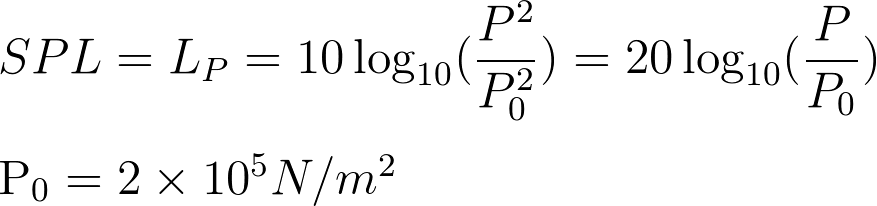
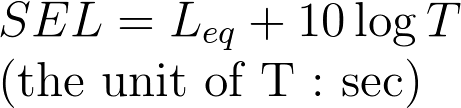
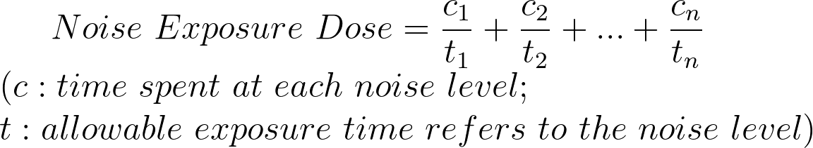
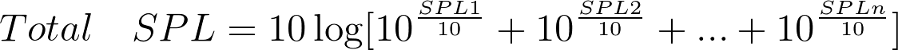

簡介
相關法規
相關公式
檢查工具
返回
人體長期處在噪音的環境之中，會依音量強度及持續時間長短不同，對身體逐漸造成以下的傷害及疾病：聽力障礙、心血管疾病、破壞人體正常運作、精神障礙、消化道疾病、影響工作學習、容易緊張、影響生育功能、影響幼兒健康、更甚者可能導致死亡。
因噪音導致的聽力損失可概分為二：
傳音性之聽力損失，此類是由外傷所導致的，由於受巨大能量之突發性噪音（如：爆炸、放鞭炮或打靶…等突發性音源）產生強大壓力造成耳膜破裂造成之突發性聽力損失。
感音性聽力損失，即因暴露於噪音環境下使聽力閾值提高的現象。此類聽力損失又可分為二類，當聽力損失在離開噪音環境一段時間後可恢復者，為感音性的疲勞，稱之為暫時性聽力損失（temporary threshold shift, TTS）。而長期暴露在噪音環境下，使毛細胞受損，造成聽力無法恢復的損傷，稱之為永久性聽力損失（permanent threshold shift, PTS）。
勞工作業環境測定實施辦法 第六條第三款
於噪音之室內作業場所，期勞工工作日食量平均音壓皆超過85分貝時，應每六個月檢定一次以上
勞工安全衛生設施規則第300條 雇主對於發生噪音之工作場所，應依下列規定辦理：
勞工工作場所因機械設備所發生之聲音超過九十分貝時，雇主應採取工程控制、減少勞工噪音暴露時間，使勞工噪音暴露工作日八小時日時量平均不超過(一)表列之規定值或相當之劑量值，且任何時間不得暴露於峰值超過一百四十分貝之衝擊性噪音或一百十五分貝之連續性噪音；對於勞工八小時日時量平均音壓級超過八十五分貝或暴露劑量超過百分之五十時，雇主應使勞工戴用有效之耳塞、耳罩等防音防護具。
勞工安全衛生法第五條第一項第八款 雇主對防止輻射線、高溫、低溫、超音波、噪音、振動、異常氣壓等引起之危害，應有符合標準之必要安全衛生設備。
勞工安全衛生法施行細則第八條 有顯著發生噪音之室內作業場所應實施作業環境測定
聲音強度
Leq
每單位時間之內，通過垂直於行進方向上每單位面積的聲波能量

美國貝爾實驗室提出以對數方式來比較聲音強度，並稱之為「聲音強度位準」或「聲音強度級」

另種比較法，稱為「聲音功率位準」或「聲音功率級」

將聲音強度位準轉換為以音壓為計算量，稱之為「音壓位準」或「音壓級」

SEL：把單一噪音的能量，換算為一秒的累積能量，然後計算其音壓級

噪音暴露劑量

若有n個音壓值，其總和的SPL值

計算音壓級時，加入”距離”的考量 (R 為觀測處與機台間的距離，單位為公尺；r 為機台尺寸，分作大、中、小三種，其r值分別為 r = 0.15, 0.3, 1 m)
LEG
變動性噪音的均能音量
新增
Submit